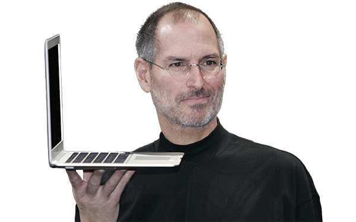

Rip A Legend! 😭
Born
Steven Paul Jobs
February 24, 1955
San Francisco, California, U.S.
Death
October 5, 2011 (aged 56)
Palo Alto, California, U.S.
Occupation
Co-founder, Chairman, and CEO of Apple Inc
Parents
Paul Jobs (adoptive father)
Clara Jobs (adoptive mother)
Abdulfattah Jandali
(biological fath
Joanne Schieble Simpson (biological mother)
Children
with Brennan;
Lisa Brennan (b. 1978)
with Powell;
Reed Jobs (b. 1991)
Erin Jobs (b. 1995)
Eve Jobs (b. 1998)
Cause of death
Pancreatic cancer and respiratory arrest
📅 Timeline
24 Feb 1955
Steven Paul was born in San Francisco, the son of
Abdulfattah Jandali and Joanne Schieble. He is quickly adopted by Paul and Clara Jobs
1969
Steve Jobs meets Steve Wozniak, 5 years older, through a
mutual friend. Woz and Steve share a love of electronics, Bob Dylan, and pranks
Mar 1976
Woz and Steve show the early Apple I board at the Homebrew
Computer Club
28 Aug 1976
Steve Jobs and Woz show off the Apple I at the Personal
Computing Festival in Atlantic City, with help from Dan Kottke
1978
At Apple, work starts on the Apple III and the Lisa, while
Jef Raskin begins The Book of Macintosh
May 1980
Apple launches the Apple III, which will prove a disastrous
flop
Jan 1983
Launch of the Lisa computer. The Lisa team later merges
with the Mac team under Steve Jobs's leadership
8 Apr 1983
PepsiCo CEO John Sculley becomes Apple's CEO after having
been wooed by Steve Jobs for several months
17 Sep 1985
Steve Jobs resigns from Apple and starts NeXT with five
other refugees from Apple. Apple announces it will sue NeXT
Dec 1996
Apple, which was desperately looking for a modern
operating system to buy, eventually buys NeXT for $400 million. Steve Jobs is named "informal
adviser" to Apple CEO Gil Amelio
6 May 1998
Steve Jobs introduces Apple's revolutionary iMac at the
Flint Center auditorium in Cupertino, 14 years after he had introduced the Macintosh at that same
place
5 Oct 1999
Introduction of the iMac DVs and of iMovie, the first of
Apple's first Digital Hub app
28 Apr 2003
Apple opens the revolutionary online iTunes Music Store in
the US, after negotiating landmark deals with all major music labels
15 Jan 2008
At Macworld 2008, Steve Jobs introduces MacBook Air, with
the tagline 'the world's thinnest notebook'. Three years later, it will come to redefine all of
Apple's notebook product line
24 Aug 2011
Steve Jobs resigns as CEO of Apple, with the words 'I
have always said if there ever came a day when I could no longer meet my duties and expectations
as Apple's CEO, I would be the first to let you know. Unfortunately, that day has come.'
Tim Cook becomes Apple CEO
5 Oct 2011
Steve Jobs dies at home, surrounded by his family